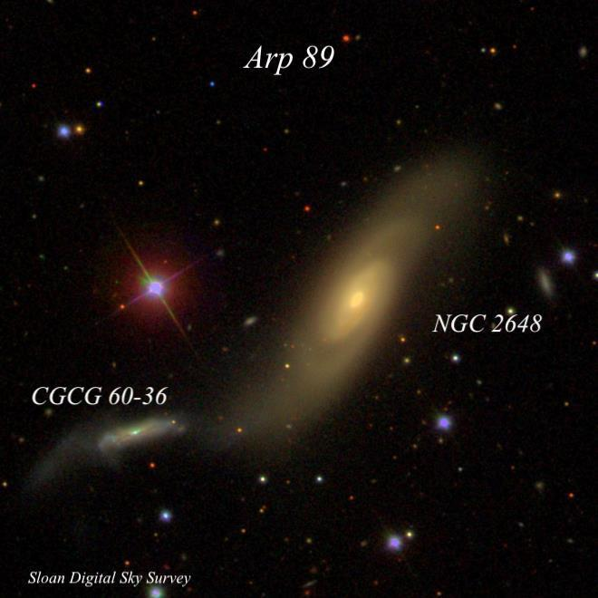
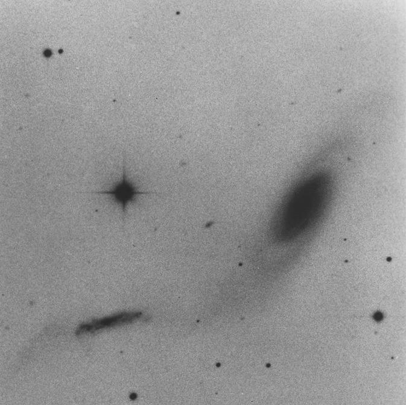
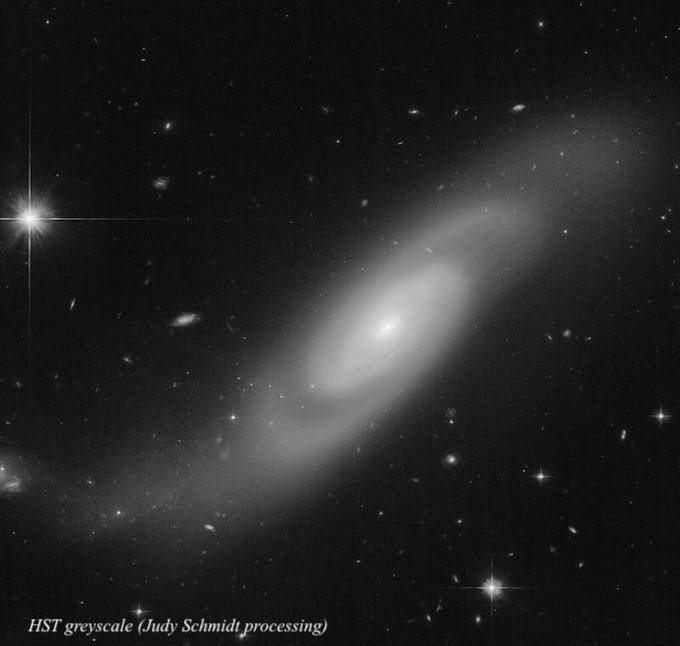
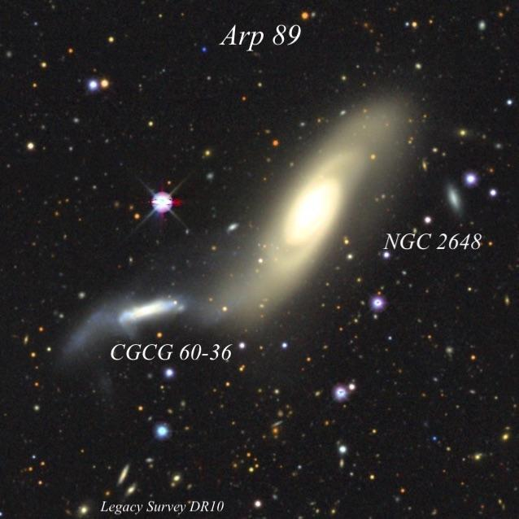

NGC 2648 = Arp 89
- Name: NGC 2648 = Arp 89 = KPG 168A = UGC 4541 = MCG +02-22-005 = CGCG 060-035 = PGC 24464
- RA: 08h 42m 39.9s
- Dec: +14° 17' 09" (2000)
- Constellation: Cancer
- Type: Sab
- Size: 3.2'x1.1'
- Magnitudes: 11.9V, 12.8B
- Surf Br: 13.1 mag/arcmin²
NGC 2648 was discovered by William Herschel on 19 Mar 1784, near the start of sweep 177. His description reads, "Faint, small, with a nucleus. I had some doubts but 240 confirmed the reality." He swept the area again two years later (nearly to the day) and logged "Faint, little extended from north-preceding to south-following, considerably small. Almost like two joined together." John Herschel reported from South Africa that it appeared "pretty bright; little extended; pretty suddenly much brighter middle; precedes a star 10th magnitude."

Despite William's comment "Almost like two joined together", I don't believe he noticed the small edge-on companion to the southeast. But R.J. Mitchell, Lord Rosse's assistant, made an observation on 23 Feb 1857. He clearly sketched a second nebula (Alpha) and noted, "I think Alpha is a very faint ray though likely to be taken at first for a star." The diagram shows CGCG 060-036 = MCG +02-22-005 as a small nebula extending WNW-ESE. Unfortunately, the full description and sketch was not included in Lord Rosse's 1861 monograph, so John Herschel was unaware of the companion when he compiled the General Catalogue (GC) in 1864 and Dreyer skipped CGCG 060-036 in the NGC.
Halton Arp included the interacting pair as Arp 89 in his 1966 Atlas of Peculiar Galaxies, under the classification "Spiral galaxy with large high surface brightness companion on arm." The pair is also known as KPG 168 from the Karachentsev Isolated Pairs of Galaxies Catalogue.
This image from the 200-inch at Palomar is in the Atlas, but the second image from the HST displays the spiral arms much better.


In my 24-inch, NGC 2648 appeared moderately or fairly bright, elongated 5:2 NW-SE, ~1.5'x0.6', sharply concentrated with a very bright core. An 11th magnitude star lies just under 2' east of center. The companion is faint, small, elongated 5:2 WNW-ESE, ~25"x10", low even surface brightness.
Back in 2012, I had a look through Jimi's 48-inch and NGC 2648 extended nearly 2.5' in length. The large, very bright core increased to a stellar nucleus. The galaxy had an asymmetric appearance with the south-southeast arm stretched into a faint tidal tail. The brighter portion extended in the direction of the major axis, but a faint thinner tail curved east, fading out just before connecting with CGCG 060-036. The companion was quite thin -- 1.0'x0.2' -- and sharply concentrated with a very small, bright nucleus. I only had hints of its tidal extension to the east.

A 6-inch scope will certainly show NGC 2648, but what aperture will reveal the disrupted companion CGCG 060-036?
As always,
"Give it a go and let us know!
Good luck and great viewing!"